전산응용토목제도기능사 (2012-02-12 기출문제)
1과목: 토목제도(CAD)
1. D16 이하의 철근을 사용하여 현장 타설한 콘크리트의 경우 흙에 접하거나 옥외공기에 직접 노출되는 콘크리트 부재의 최소 피복 두께는?
- 20㎜
- 40㎜
- 50㎜
- 60㎜
(정답률: 71%)

2. 콘크리트에 일정하게 하중을 주면 응력의 변화는 없는데도 변형의 시간이 경과함에 따라 커지는 현상은?
- 건조수축
- 크리프
- 틱소트로피
- 릴랙세이션
(정답률: 70%)
3. 철근 콘크리트 보의 휨부재에 대한 강도 설계법 기본 가정이 아닌 것은?
- 콘크리트의 변형률은 중립축으로부터 거리에 비례한다.
- 철근의 변형률과 같은 위치의 콘크리트의 변형률은 같다.
- 콘크리트 압축 연단의 극한 변형률은 0.003으로 가정한다.
- 모든 철근의 탄성 계수는 Es=1.0×105MPa이다.
(정답률: 49%)
4. 콘크리트를 배합 설계할 때 물-결합재 비를 결정할 때의 고려사항으로 거리가 먼 것은?
- 소요의 강도
- 내구성
- 수밀성
- 철근의 종류
(정답률: 76%)
5. 콘크리트용 잔골재의 입도에 관한 사항으로 옳지 않은 것은?
- 잔골재는 크고 작은 알이 알맞게 혼합되어 있는 것으로서 입도가 표준 범위 내인가를 확인한다.
- 입도가 잔골재의 표준 입도의 범위를 벗어나는 경우에는 두 종류 이상의 잔골재를 혼합하여 입도를 조정하여 사용한다.
- 일반적으로 콘크리트용 잔골재의 조립률의 범위는 5.0 이상인 것이 좋다.
- 조립률은 골재의 입도를 수량적으로 나타내는 한 방법이다.
(정답률: 60%)
6. 콘크리트용 골재가 갖추어야 할 성질에 대한 설명으로 옳지 않는 것은?
- 알맞은 입도를 가질 것
- 깨끗하고 강하며 내구적일 것
- 연하고 가느다란 석편을 함유하고 있을 것
- 먼지, 흙, 유기불순물 등의 유해물이 허용한도 내일 것
(정답률: 90%)
7. 콘크리트의 등가 직사각형 응력분포 식에서 β1은 콘크리트의 압축강도의 크기에 따라 달라지는 값이다. 콘크리트의 압축강도가 35MPa 일 경우 β1의 값은?
- 0.801
- 0.822
- 0.850
- 0.878
(정답률: 39%)
8. 강도설계법에서 단철근 직사각형의 등가 직사각형의 응력분포의 길이 (a)를 구하는 공식은? (단, AS : 인장철근량, ƒy : 철근의 설계기준항복강도,ƒck : 콘크리트의 설계기준강도, b: 단면의 폭)
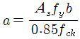
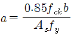
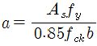
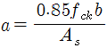
(정답률: 41%)
9. 동일평면에서 평행한 철근사이의 수평 순간격은 최소 몇 ㎜ 이상 이어야 하는가?
- 15㎜
- 20㎜
- 25㎜
- 30㎜
(정답률: 63%)
10. 그림과 같이 b=28cm, d=50cm, As=3-D25=15.20cm2인 단철근 직사각형의 보의 철근비는? (여기서, ƒck=28MPa, ƒy=420MPa이다.)
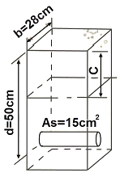
- 0.01
- 0.14
- 0.92
- 1.42
(정답률: 36%)
11. 표준갈고리를 갖는 인장 철근의 정착 길이는 항상 얼마 이상이어야 하는가?
- 150㎜ 이상
- 250㎜ 이상
- 350㎜ 이상
- 450㎜ 이상
(정답률: 34%)
12. 철근콘크리트의 강도 설계법에서 단철근 직사각형보에 대한 균형 철근비(Pb)를 구하는 식은? (단, ƒck: : 콘크리트 설계기준강도(MPa), ƒy : 철근의 설계기준강도(MPa), β1 : 계수)
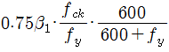
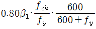
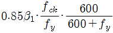
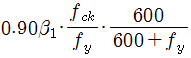
(정답률: 75%)
13. 6KN/m의 등분포하중을 받는 지간 4m의 철근콘크리트 캔틀레버 보가 있다. 이 보의 작용 모멘트는? (단, 하중계수는 적용하지 않는다.)
- 12 KN·m
- 24 KN·m
- 36 KN·m
- 48 KN·m
(정답률: 25%)
14. D16 이하의 스트럽이나 띠철근에서 철근을 구부리는 내면 반지름은 철근 공칭 지름의 (db)의 몇 배 이상으로 하여야 하는가?
- 1배
- 2배
- 3배
- 4배
(정답률: 43%)
15. AE 콘크리트의 특징에 대한 설명으로 틀린 것은?
- 내구성과 수밀성이 감소된다.
- 워커빌리티가 개선된다.
- 동결 융해에 대한 저항성이 개선된다.
- 철근과의 부착 강도가 감소된다.
(정답률: 47%)
16. 경량골재 콘크리트에 대한 설명으로 옳지 않는 것은?
- 경량골재는 일반적으로 입경이 작을수록 밀도가 커진다.
- 경량골재를 써서 만든 콘크리트로서 일반적으로 단위질량이 2500~2700Kg/m3인 콘크리트를 말한다.
- 경량골재의 굵은골재 최대치수는 공사시방서에서 정한바가 없을 때에는 20㎜ 이하로 한다.
- 골재 씻기 시험에 의하여 손실되는 양은 10% 이하로 한다.
(정답률: 71%)
17. 압축을 받는 부재의 모든 축방향 철근은 띠철근으로 둘러싸야 하는데 띠철근의 수직간격은 띠철근이나 철선지름의 몇 배 이하로 하여야 하는가?
- 16배
- 32배
- 48배
- 64배
(정답률: 42%)
18. 철근을 용접에 의한 이음을 하는 경우 이 때, 이음부의 철근의 설계기준항복강도의 얼마 이상을 발휘할 수 있는 완전용접이어야 하는가?
- 85%
- 95%
- 115%
- 125%
(정답률: 71%)
19. 균형철근보에 관한 설명으로 옳지 않는 것은?
- 취성파괴 방지를 위해 철근 사용량을 규제하는 것이다.
- 균형 철근비보다 철근을 많이 넣는 과다 철근보는 연성파괴가 일어나도록 한다.
- 균형 철근비를 사용하는 보를 균형보(평형보)라고 하며, 이 보의 단면을 균형단면(평형단면), 이때의 철근 량을 균형 철근량(평형 철근량)이라고 한다.
- 균형 철근비는 철근이 항복함과 동시에 콘크리트의 압축 변형률이 0.003에 도달할 때의 철근비를 뜻한다.
(정답률: 54%)
20. 잔골재의 조립률 2.3, 굵은골재의 조립률 6.7를 사용하여 잔골재와 굵은골재를 질량비 1:1.5로 혼합하면 이때 혼합된 골재의 조립률은?
- 3.67
- 4.94
- 5.27
- 6.12
(정답률: 54%)
2과목: 철근콘크리트
21. 토목구조물의 특징으로 옳은 것은?
- 다량 생산을 할 수 있다.
- 대부분은 개인적인 목적으로 건설된다.
- 건설에 비용과 시간이 적게 소요된다.
- 구조물의 수명, 즉 공용 기간이 길다.
(정답률: 73%)
22. 다음 중 역사적인 토목 구조물로서 가장 오래된 교량은?
- 미국의 금문교
- 영국의 런던교
- 프랑스의 아비뇽교
- 프랑스의 가르교
(정답률: 58%)
23. 구조 재료로서 강재의 단점으로 옳은 것은?
- 재료의 균질성이 떨어진다.
- 부재를 개수하거나 보강하기 어렵다.
- 차량 통행에 의하여 소음이 발생하기 쉽다.
- 강구조물을 사전 제작하여 조립하기 어렵다.
(정답률: 73%)
24. 프리스트레스트 콘크리트에 사용되는 강재의 종류가 아닌 것은?
- PS형강
- PS강선
- PS강봉
- PS강연성
(정답률: 46%)
25. 교량의 설계하중에서 주하중이 아닌 것은?
- 설하중
- 활하중
- 고정하중
- 충격하중
(정답률: 60%)
26. 띠철근 기둥의 축방향 철근 단면적에 최소 한도를 두는 이유로 옳지 않은 것은?
- 예상외의 휨에 대비할 필요가 있다.
- 콘크리트의 크리프를 감소시키는데 효과가 있다.
- 콘크리트의 건조수축의 영향을 증가시키는데 효과가 있다.
- 콘크리트의 부분적 결함을 철근으로 보충하기 위해서 이다.
(정답률: 51%)
27. 직사각형 독립확대 기초의 크기가 2m×3m 이고 허용 지지력이 250kN/m2 일 때 이 기초가 받을 수 있는 최대 하중의 크기는 얼마인가?
- 500kN
- 1,000kN
- 1,500kN
- 2,000kN
(정답률: 85%)
28. 1방향 슬래브에서의 두께는 최소 몇 ㎜ 이상으로 하여야 하는가?
- 70㎜
- 80㎜
- 90㎜
- 100㎜
(정답률: 70%)
29. 강재의 용접 이음 방법이 아닌 것은?
- 아크 용접법
- 리벳 용접법
- 가스 용접법
- 특수 용접법
(정답률: 42%)
30. 다음에서 설명하는 구조물은?
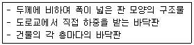
- 보
- 기둥
- 슬래브
- 확대기초
(정답률: 75%)
31. 측방향 압축률을 받는 부재로서 높이가 단면 최소 치수의 몇 배 이상이 되어야 기둥이라고 하는가?
- 2배
- 3배
- 4배
- 5배
(정답률: 51%)
32. 벽으로부터 전달되는 하중을 분포시키기 위하여 연속적으로 만들어진 기초는?
- 독립 확대 기초
- 벽 확대 기초
- 연결 확대 기초
- 말뚝 기초
(정답률: 54%)
33. 강재의 보 위에 철근 콘크리트 슬래브를 이어 쳐서 양자가 일체하도록 된 구조는?
- 철근 콘크리트 구조
- 콘크리트 구조
- 강 구조
- 합성 구조
(정답률: 53%)
34. 프리스트레스를 도입한 후의 손실이 아닌 것은?
- 콘크리트의 크리프
- 콘크리트의 건조 수축
- 콘크리트의 블리딩
- PS 강재의 릴랙세이션
(정답률: 35%)
35. 철근 콘크리트(RC)의 특징이 아닌 것은?
- 내구성이 우수하다.
- 개조, 파괴가 쉽다.
- 유지 관리비가 적게 든다.
- 여러 가지 모양과 크기의 구조물을 만들기 쉽다.
(정답률: 72%)
36. 삼각 스케일에 표시된 축척이 아닌 것은?
- 1 : 10
- 1 : 200
- 1 : 300
- 1 : 600
(정답률: 67%)
37. CAD 작업 파일의 확장자로 옳은 것은?
- TXT
- DWG
- HWP
- JPG
(정답률: 73%)
38. 그림과 같은 재료 단면의 경계표시가 나타내는 것은?
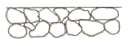
- 흙
- 호박돌
- 바위
- 잡석
(정답률: 67%)
39. 도면 작도 시 유의사항으로 틀린 설명은?
- 도면은 KS 토목제도 통칙에 따라 정확하게 그려야 한다.
- 도면의 안정감을 위해 치수선의 간격을 도면마다 다르게 하며, 표시도 다양하게 한다.
- 도면에는 불필요한 사항은 기입하지 않는다.
- 글씨는 명확하게 하고 띄어쓰기에 맞게 쓴다.
(정답률: 86%)
40. KS의 부문별 기호 중 토목·건축 부문의 기호는?
- KS C
- KS D
- KS E
- KS F
(정답률: 88%)
3과목: 토목일반구조
41. 치수 표기에서 특별한 명시가 없으면 무엇으로 표시하는가?
- 가상치수
- 재료치수
- 재단치수
- 마무리치수
(정답률: 78%)
42. 자갈을 나타내는 재료의 단면의 경계 표시는?
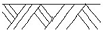
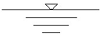
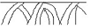
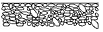
(정답률: 88%)
43. 다음 중 자연석의 단면 표시로 옳은 것은?
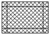
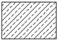
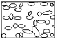
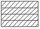
(정답률: 57%)
44. 어떤 재료의 치수가 2-H 300×200×9×12×1000로 표시되었을 때 플렌지 두께는?
- 2㎜
- 9㎜
- 12㎜
- 200㎜
(정답률: 67%)
45. 정투상법에서 제3각법에 의한 설명으로 옳지 않은 것은?
- 평면도는 정면도 아래에 그린다.
- 우측면도는 정면도 우측에 그린다.
- 제3면각 안에 물체를 놓고 투상하는 방법이다.
- 각 면에 보이는 물체는 보이는 면과 같은 면에 나타낸다.
(정답률: 69%)
46. 치수선에 대한 설명으로 옳은 것은?
- 치수선은 표시할 치수의 방향에 평행하게 그린다.
- 치수선은 물체를 표시하는 도면의 내부에 그린다.
- 여러 개의 치수선을 평행하게 그릴 때 간격은 가급적 다향하게 그린다.
- 치수선은 가급적 교차하게 그린다.
(정답률: 64%)
47. 다음 선의 종류 중 가장 굵게 그려져야 하는 선은?
- 중심선
- 윤곽선
- 파단선
- 치수선
(정답률: 75%)
48. 사투상도에서 물체를 입체적으로 나타내기 위해 수평선에 대하여 주는 경사각이 아닌 것은?
- 30°
- 45°
- 60°
- 90°
(정답률: 41%)
49. 도로 설계제도에서 굴곡부 노선의 제도에 사용되는 기호 중 곡선 시점을 나타내는 것은?
- I.P
- E.C
- T.L
- B.C
(정답률: 48%)
50. 그림은 컴퓨터 중앙처리 장치를 도식화한 것이다. (A) 부분에 해당하는 장치는?
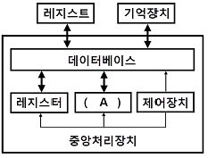
- 저장장치
- 연산장치
- 처리장치
- 수합장치
(정답률: 50%)
51. 도면을 표현형식에 따라 분류할 때 구조물의 구조 계산에 사용되는 선도로 교량의 골조를 나타내는 도면은?
- 일반도
- 배근도
- 구조선도
- 상세도
(정답률: 64%)
52. 콘크리트 구조물 제도에서 지름 16㎜ 일반 이형 철근의 표식법으로 옳은 것은?
- R16
- ø16
- D16
- H16
(정답률: 65%)
53. 척도에 대한 설명으로 옳지 않은 것은?
- 현척은 1:1을 의미한다.
- 척도의 종류는 축척, 현척, 배척이 있다.
- 척도는 물체의 실제 크기와 도면에서의 크기 비율을 말한다.
- 1:2는 2배로 크게 그린 배척을 의미한다.
(정답률: 69%)
54. 치수의 기입 방법에 대한 설명으로 틀린 것은?
- 협소한 구간에서의 치수 기입은 필요에 따라 생략해도 된다.
- 경사의 방향을 표시할 필요가 있을 때에는 하향 경사 쪽으로 화살표를 붙인다.
- 원의 지름을 표시하는 치수선은 기준선 또는 중심선에 일치하지 않게 한다.
- 작은 원의 지름은 인출선을 써서 표시할 수 있다.
(정답률: 42%)
55. 물체를 투상면에 대하여 한쪽으로 경사지게 투상하여 입체적으로 나타낸 것은?
- 투시투상도
- 사투상도
- 등각투상도
- 축측투상도
(정답률: 49%)
56. 도면을 철하고자 할 때 어떤 쪽을 우선으로 철하는가?
- 위쪽
- 아래쪽
- 왼쪽
- 오른쪽
(정답률: 65%)
57. 철근의 표시 방법에서 "24@200=4800"에 대한 설명으로 옳은 것은?
- 전장 4800㎜를 24㎜ 간격으로 200등분
- 전장 4800㎜를 200㎜ 간격으로 24등분
- 전장 4800㎜를 24m 간격으로 200등분
- 전장 4800㎜를 24m 간격으로 200등분
(정답률: 74%)
58. 아래 그림은 무엇을 작도하기 위한 것인가?
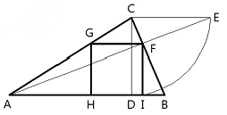
- 사각형에 외접하는 최소 삼각형
- 사각형에 외접하는 최대 정삼각형
- 삼각형에 내접하는 최대 정사각형
- 삼각형에 내접하는 최소 직사각형
(정답률: 70%)
59. 한 도면에서 두 종류 이상의 선이 같은 장소에 겹치게 될 때 순서로 옳은 것은?
- 숨은선 → 외형선 → 절단선 → 중심선
- 외형선 → 숨은선 → 절단선 → 중심선
- 중심선 → 외형선 → 절단선 → 숨은선
- 숨은선 → 중심선 → 절단선 → 외형선
(정답률: 75%)
60. 다음 장치 중 입력장치가 아닌 것은?
- 터치패드
- 스캐너
- 태블릿
- 플롯터
(정답률: 74%)